|
Many cultural traditions contain an esoteric thread describing what might be referred to as the anatomy of the human soul. There are the ka and ba of Egyptian mythology, the meridians of acupuncture, the chakras and nadis of yoga, the sephirot of Hebrew cabbalistic tradition, and the etheric and astral bodies of western esoteric lore. It is natural that this should be so since, as master mythologist Joseph Campbell pointed out during a Thinking Allowed interview, the mythologies of all cultures are borne of our bodily experiences: 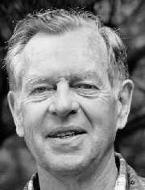 Joseph Campbell Fantasy and imagination is a product of the body. The energies that bring forth the fantasies derive from the organs of the body. The organs of the body are the source of our life, and of our intentions for life.One might say that our spiritual bodies are made of thought itself. Of course, from the perspective of psychic folklore, thought is tangible -- almost solid -- and certainly very potent. As we journey through the lore of spiritual anatomy, it is appropriate that we begin by examining the role of thought itself. The concept of thoughtforms provides an excellent vehicle for the journey-- for in many systems and teachings thought, itself, is very spiritual in nature. Thoughtforms Descriptions of thoughtforms and the mental body come from Theosophists Annie Besant and C. W. Leadbeater who were both very influential in the shaping of modern psychic folklore: 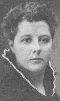 Annie Besant -- Fabian Socialist (and George Bernard Shaw's lover) who later became head of the Theosophical Society. "The mental body is an object of great beauty, the delicacy and rapid motion of its particles giving it an aspect of living iridescent light, and this beauty becomes an extraordinarily radiant and entrancing loveliness and the intellect becomes more highly evolved and is employed chiefly on pure and sublime topics. Every thought gives rise to a set of correlated vibrations in the matter of this body, accompanied with a marvelous display of color, like that in the spray of a waterfall as the sunlight strikes it, raised to the nth degree of color and vivid delicacy. The body under this impulse throws off a vibrating portion of itself, shaped by the nature of the vibration -- as figures are made by sand on a disk vibrating to a musical note -- and this gathers from the surrounding atmosphere matter like itself in fineness from the elemental essence of the mental world. We have then a thought-form pure and simple, and it is a living entity of intense activity animated by the one idea that generated it. If made of finer kinds of matter, it will be of great power and energy, and may be used as a most potent agent when directed by a strong and steady will....To this picture of the mental body, Yogi Ramacharaka adds a further description of the mental world as such: Places and localities are often permeated by the thought of persons who formerly lived there, who have moved away or died many years ago. The occultist knows that this thought-atmosphere of a village, town, city, or nation is the composite thought of those dwelling in it or whom have previously dwelt there. Strangers coming into the community feel the changed atmosphere about it, and, unless they find it in harmony with their own mental character, they feel uncomfortable and desire to leave the place. If one, not understanding the laws operating in the thought world, remains long in a place, he is most likely to be influenced by the prevailing thought-atmosphere, and in spite of himself a change begins to be manifest in him and he sinks or rises to the level of the prevailing thought.... 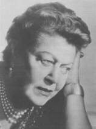 Eileen Garrett Founder of the Parapsychology Foundation An example of the perception of thoughtforms is provided by the famous medium Eileen Garrett: One sees lines and colors and symbols. These move, and one is wholly concentrated on them and their movement. I say "symbols" here for want of a better word. I frequently see curving lines of light and color that flow forward in strata, and in these strips or ribbons of movement there will appear other sharply angled lines that form and change and fade like arrow heads aimed and passing in various directions. And in this flow of energy that is full of form and color, these arrow heads will presently indicate the letter H. Each line of the H will be an independent curve, and their combination will not remain identifiable for very long. But I shall have caught it; and holding it suspended in awareness, I continue to watch the process develop and unfold. Soon a rapidly drifting A appears in the field of concentration, and then, let us suppose, an R; and presently I have gathered the word HARRY out of the void, either as a proper name or as a verb temporarily without either subject or object. Whether it is actually a noun or a verb will depend upon the context of the perception as a whole.The existence of the mental world implies a view of nature incorporating meaning as well as mechanism. We are no longer dealing with blind forces bouncing aimlessly throughout the universe. The substance of the mental world is imbued with purpose. Minds, or monads, are constantly emitting radiation of an intelligent nature. Every thought may be thought of as an active spiritual force. Iconoclastic researcher Andrija Puharich, M.D., has coined the term inergy, meaning "intelligent energy" to refer to this realm of spirit or thought. The Aura 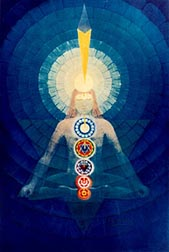 Theosophical, psychic and mystical lore has it that the emotions and thoughts of an individual distinguish themselves by their form and color. This is thought of as the aura or astral body which is visualized as an egg shaped envelope around the human being. Is the aura Qimply composed of our thoughts (or our thoughts about someone else's thoughts) or does it have an independent physical existence? The answer, of course, depends on what we mean by aura -- which is hardly an operationally defined scientific term. There are many different meanings for the term. (For example, in medicine, an aura refers to sensations which develop prior to the onset of an epileptic seizure.) C. W. Leadbeater, one of the Theosophists who was responsible for popularizing the term "astral" plane, claims that it was inherited from the medieval alchemists. The term means starry and was applied to the plane above the physical because of its luminous appearance. Furthermore, the emotional currents were thought to be influenced by the planetary positions. The meaning of the different colors that appear in the astral body is recorded by Yogi Ramacharaka whose writings mimic those of Madame Blavatsky, founder of the Theosophical Society, on this topic: Auric Colors and Their Meanings
If we view the mind/brain system as a biocomputer, we could say that there are various sensory inputs (eyes, ears, nose, mouth, skin) and various internal perceptual display systems (sight, hearing, smell, taste, touch). It is entirely possible that the input from one sensory mode could be displayed internally using a modality normally reserved for a different sensory mode. Thus, under the influence of hypnotic suggestion or psychedelic drugs, individuals often report "seeing music." This well-known phenomena is referred to as synesthesia. A very reasonable explanation of the human aura as reported by psychics is that this is also a form of synesthesia -- a special way we can program ourselves to display information in the sensorium of our minds. The inputs for this display pattern could conceivably arrive from any sensory (or extrasensory) modality, could be derived from intuitive or logical processing, or could be generated from the biocomputer programming (i.e., cultural condition and autoconditioning) itself. An amusing anecdote relating to the perception
of the human aura on the "astral level" comes from the Texas psychic Ray
Stanford. Ray, who seems to be very proficient at seeing auras, visited
his twin brother Rex, a parapsychologist then at the University of Virginia;
he gave a demonstration of his talents before a small group of researchers
assembled by his brother. One of the guests was Dr. Robert Van de Castle,
the director of the sleep and dream laboratory. Ray noticed a number of
pink spots in the aura around Van de Castle's abdomen. This perception
puzzled him since it is one he normally associated with pregnant women;
and he remarked to Dr. Van de Castle, "If I didn't know better, I'd say
you were pregnant." This drew some laughter from the audience. However,
Van de Castle then reflected that he had been analyzing the dreams of pregnant
women all morning and had even remarked earlier that day that he was beginning
to feel like a pregnant woman himself.
Experimental Tests of the Aura You might think it would be relatively simple for scientists to test the objectivity of the aura, by comparing the independent observations of a number of psychics. In fact, the problem is difficult and there has been very little systematic research. For one thing, if the observations are being made at different moments of time, it is possible the aura could change appearance. Also, a truly objective study would want to rule out any other sensory cues that could be confused with the aura. Charles Tart has suggested that the target person for such a study be hidden behind an opaque screen shaped so only the aura should be visible beyond its perimeter and not the physical body at all. To my knowledge, eighteen years after Tart's proposal, there have still been no satisfactory experiments of this type. In a study conducted by Dr. A. R. G. Owen
of Toronto, fourteen different psychics made independent observations of
the aura of a single subject. The reported descriptions show wide variation
that, according to Owen, "seems to go beyond that degree of variability
in the aura, that according to percipients of auras, is to be expected
as a result of temporal variations in the physical, emotional or mental
state of the possessor of the aura." However the study took place over
a one year period. Going over the data, I myself was struck by the similarity
of reports made by different observers on the same day. Owen maintained
there was no cogent evidence the subject was in different physical or emotional
states during the different days of experimentation. It does not appear
he was looking for subtle emotional changes. The fact that lighting conditions
were different on the different days of experimentation further confuses
the data. Furthermore, some subjects saw the aura with their eyes open,
while at least one subject viewed the aura with his eyes closed.
The Vital Body In addition to the astral body, which seems to correlate with thoughts and emotions, some occultists refer to the vital body or sometimes etheric body -- more associated with life energy and health and more suggestive than the astral body of having a measurable physical basis. It is interesting to note that the term etheric body developed at a time in history prior to the Michelson-Morley experiments which disconfirmed the physical theory of the ether as a medium permeating the known universe. It is probably that the term etheric body (like astral body) developed from what was once legitimate scientific speculation. Today such terms belong clearly in the realm of occult folklore. Max Heindel, founder of the Rosicrucian Fellowship, describes the etheric or vital body: 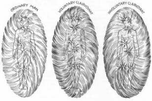 According to Rosicrucian Max Heindel, one's level of clairvoyant functioning is reflected in the aura as diagrammed above. The vital body of plant, animal, and man, extends beyond the periphery of the dense body as the Etheric Region, which is the vital body of a planet, extends beyond its dense part, showing again the truth of the Hermetic axiom "As above, so below." The distance of this extension of the vital body of man is about an inch and a half. The part which is outside the dense body is very luminous and about the color of a new-blown peach-blossom. It is often seen by persons having very slight involuntary clairvoyance. The writer has found, when speaking with such persons, that they frequently are not aware they see anything unusual and do not know what they see.Heindel's description is typical of the type of writing found in the occult and mystical literature from many cultures and periods of time. A word of caution here. There are a few effects of an optical or physiological nature that might easily be taken for an aura by a careless, or uninformed, observer. In a clever series of experiments, Canadian researcher A. R. G. Owen determined that many people will see such "rim" auras, glowing about an inch or two from the edge of inanimate objects even more distinctly than around living plants, animals, and humans. Many people were unable to distinguish between the aura that appeared around a piece of cardboard shaped as a hand and that observed around a real human hand. 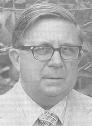 A. R. G. Owen Other observers, particularly those who saw a much larger and more vivid aura, were quite able to make the distinction. In any case, almost all of the subjects were able to see some aura-like visual phenomena. These perceptions are attributed to the active role the retina and the visual cortex take in organizing and interpreting visual contours while the eye itself is constantly making tiny movements, scanning whatever is observed. AURA You can easily experience this yourself simply by focusing on the contours of the word written above. See what you notice. The power of suggestions also is active here. This effect is highlighted by the sharp black and white contrast. On the other hand, Dr. Owen was able to
repeatedly demonstrate a most unusual and vivid aura-like appearance on
the end of a rod while it was the focus of concentration from two gifted
psychics. A number of observers were able to independently verify this
perception, which was not normally seen around the rod. However the exact
conditions for replication of this effect are not known.
The Chakras 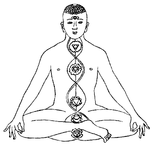 The word chakra in Sanskrit means wheel; and according to the Theosophical tradition, the chakras are "a series of wheel-like vortices existing in the surface of the "etheric body." The etheric body is part of the human aura closest in proximity to the skin. It is sometimes referred to as the health aura, and I think can be equated to the electromagnetic field of the body or the bioplasma without doing injustice to the Theosophical system. The chakras actually extend out beyond the etheric body to the more subtle parts of the aura-such as the astral body. While normally invisible, some individuals perceive the etheric body as a faintly luminous mist extending slightly beyond the body. In 1927, the Reverend Charles Leadbeater wrote a book on the chakras based largely on his own psychic perceptions: When quite undeveloped they appear as small circles about two inches in diameter, glowing dully in the ordinary man; but when awakened and vivified they are seen as blazing, coruscat@ng whirlpools, much increased in size, and resembling miniature suns....If we imagine ourselves to be looking straight down into the bell of a flower of the convolvulus type, we shall get some idea of the general appearance of a chakra. The stalk of the flower in each springs from a point in the spine.Leadbeater also has uncovered descriptions of such vortices, similar to his own, in the works of the seventeenth century German mystic Johann Georg Gichtel, a pupil of Jacob Boehme. Gichtel assigned an astrological planetary influence to each of the seven centers in his system.
It is uncertain to me whether he was influenced by the Sanskrit tradition. However, on the title page of his book, Theosophia Practica he claims to be presenting... A short exposition of the three principles of the three worlds in humanity, represented in clear pictures, showing how and where they have their respective Centres in the inner person; according to what the author has found in himself in divine contemplation, and what he has felt, tasted and perceived.In Los Angeles at the Higher Sense Perception Research Foundation, Dr. Shafica Karagula, a neuropsychiatrist, has for many years made clinical observations of individuals gifted with extraordinary perception. One of her subjects, whom she calls "Diane," reported the ability to visualize vortices of energy, like spiral cones, which seemed to be in remarkable agreement with Leadbeater's descriptions. She described the etheric body as a sparkling web of light beams in constant movement "like the lines of a television screen when the picture is not in focus." There were eight major vortices of force and many smaller vortices. Seven of the vortices seemed to be directly related to the different glands of the body. Diane was able to successfully diagnose various diseases by noticing disturbances in the vortices. Karagula tested this ability by taking Diane to an endocrine clinic of a large New York hospital and having her read the auras of patients selected at random in the waiting room. Then Diane's observations were checked against the medical case records. Karagula claims she was amazed at the accuracy of Diane's diagnoses over a large number of cases. However she provides no exact figures in her book or in her published reports and we are not informed if independent judges and experimental controls were used., It is difficult to ascertain the extent to which Dr. Karagula or her subjects may have had their perceptions colored by the Theosophical tradition. Many other psychic individuals I have been acquainted with report an ability to visualize chakras. However, I know of no tested psychics who have indicated the ability to perceive chakras prior to any occult training. When it comes to making any physiological sense out of the chakras, the whole matter is filled with confusion. One widely quoted approach equates the first chakra with the reproductive system. Others associate the second chakra with sexuality and reproduction. Sometimes the sixth chakra or third eye is associated with the pineal gland, sometimes with the pituitary. The third chakra is sometimes associated with the solar plexus, sometimes with the spleen, and sometimes with the digestive system. Sometimes the second chakra is associated with the spleen. Sometimes all of the chakras are associated with nerve plexus, sometimes they are all associated with the endocrine glands. In the Tibetan system, the sixth and seventh chakra -- the third eye and the "thousand petalled lotus" are thought of as one. The Cabalistic system divides the body into ten centers. Ironically, all these systems will go into great detail in specifying the circuitry -- often called nadis -- connecting the chakras together. I find it easiest to confront all of these paradoxical interpretations with a certain curiosity and humility (although I tend to think some writers masked their lack of understanding with dogmatic assertion). Paradoxes of a comparable sort are not uncommon in the physical and natural sciences, and generally exist on the frontiers of knowledge. Most researchers tend to ignore these uncomfortable, and poorly substantiated, reports. One ingenious hypothesis was developed by Dr. William Tiller at Stanford University. Tiller was impressed with the apparent relationship of location and function between the chakras and the endocrine glands. He wondered how these so called "etheric" organs might interact with the glands. Drawing from concepts used by electrical engineers, he suggested this interaction could be analogous to a process of transduction. Imagine great energy streams flowing through space and passing through our bodies, unabsorbed and unnoticed. Tiller suggests that perhaps the chakras can be tuned in to couple with this power source and transduce some of its energy from the astral or etheric levels into the glands. One can think of the chakras and glands as electrical transformer loads that will deliver maximum power if they are balanced with respect to each other. 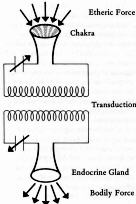 Transduction of etheric force through the chakra into the bodily force within an endocrine gland (courtesy William Tiller) One might say ideas are speculative in the extreme. While such ideas have little or no scientific merit, they serve the function of providing a modern metaphor for ancient teachings. 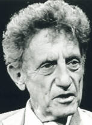 Dr. Lee Sannella (courtesy Thinking Allowed Productions) An interesting approach to the chakras has been taken by Lee Sannella, MD. He noticed that the classic literature of yoga refers to a process of psychic awakening known as the rising of kundalini. This is pictured metaphorically as the rising of a coiled snake-like energy from the base of the spine to the top of the head. As the kundalini rises, it energizes or awakens each of the chakra centers. Sanella encountered many cases of individuals who reported symptoms similar to the classic descriptions of kundalini rising. These include many strange bodily sensations of vibration and heat, combined with visionary experiences and apparent psychic awareness. He suggests that the classic yoga descriptions may be more appropriate than the medical tendency to label such experiences as "psychotic." Do chakras have some objective existence, or are they are the creations of minds who claim to observe them? The same problem is actually encountered in all fields of human knowledge. Do atoms exist? Are quarks real? Where is humor? Such concepts serve as maps to guide us through our experience; or, to use another metaphor, they are menus. We would be foolish to confuse the map for the territory or the menu for the meal or the metaphor for that which is denoted by it. Sometimes, however, by a subtle consensus of agreement, this is exactly what we do. Dr. Hiroshi Motoyama of Tokyo is a student of raja yoga who has attempted to give a literal interpretation to the chakra metaphor. In addition to wearing the hats of medical researcher and psychiatrist, Motoyama is also a Shinto priest. Using his intuitions, and those of several observers, Dr. Motoyama divided a yoga class of 100 members into three groups: (A) the yogi group in which the chakras had been clearly awakened; (B) those in whom the chakras had been slightly awakened; and (C) those in whom the chakras had not yet been awakened. The chakras are often visualized as lotus blossoms that when fully awakened appear in full bloom. In this case, no controls seem to have distinguished between "awakened chakras" and skill in practicing yoga. A number of investigations were then made to determine if there were physiological differences between these three groups. Examining the "disease tendency" of the different internal organs corresponding to chakras, such as the heart, the digestive system, the genitourinary system, and the nervous system, Motoyama found significantly greater instability of these systems in class A and B subjects. Acupuncture points associated with these organs were stimulated and measurement of skin current values were made on the palms of the hands before and after stimulation. Again the highest level of response was found in the A group. Motoyama also measured differences in the current of the fingertips and toes on right and left sides. This time greater imbalances were found in the A group of "yogis" with awakened chakras. From these studies, he concluded that the nervous system and the autonomic functioning of individuals with awakened chakras shows a much wider range and flexibility of response than with ordinary individuals. Certainly the study as reported could be criticized. One might easily suggest that Motoyama was drawing inferences from random data in order to fulfill his own expectations. Perhaps the findings seem cogent and consistent with other studies in which yoga and zen masters are able to dramatically vary heartbeat and brainwave measurements. A safer interpretation is simply to suggest that quasi-scientific work of this sort, while it contributes almost nothing to our scientific understanding, serves to perpetuate psychic folklore and polish it with the gleam of seeming scientific approval. According to yogic tradition, the chakras themselves are not to be confused with any actual physical organs of the body. Dr. Rammurti S. Mishra -- endocrinologist, Sanskrit scholar, and yogi -- in his translation of the Yoga Sutras of Patanjali states that the seven chakras are purely psychological classifications adopted as focuses of concentration in yoga. He also added that through the chakras mindstuff is able to operate upon the anatomical parts and physiological activities. You might say chakras are important parts of the software programmed into our biocomputers. As one becomes deeply involved in yogic meditation, one is taught practices associating particular sounds or mantras, images, and mythological patterns to each chakra. Thus, to an extent the chakras are brought into awareness by a creative thought process, acting upon the unformed substance we can loosely call the human aura, bioplasm, consciousness, or imagination. 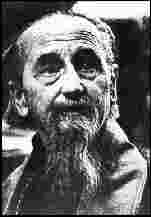 Lama Govinda Lama Anagarika Govinda, an Indian National of European descent belonging to a Tibetan Buddhist Order, describes this process quite succinctly: "Thinking is making," this is the fundamental principle of all magic, especially of all mantric science. By the rhythmic repetition of a creative thought or idea, of a concept, a perception or a mental image, its effect is augmentized and fixed (like the action of a steadily falling drop) until it seizes upon all organs of activity and becomes a mental and material reality: a deed in the fullest sense of the word.
Another theory dealing with subtle physiological systems of the human body is the Chinese healing art of acupuncture which unites ancient cosmology and astrology with a concept of life-energy, or Qi, flowing through channels in the body. One of the best ways to experience acupuncture is through a massage technique which focuses on the acupuncture points and meridians. This only requires a very gentle touch and is not difficult to learn or apply. Instructions can be found in several good books., It has been my experience that such a massage, in addition to being healthful and sensual, provides an excellent way a person can actually feel the flow of something (call it Qi, or Chi, if you like) inside and around the body. For about twenty-four continuous hours after I have had acupuncture massage, I have clearly felt the awareness of my body flow extend about a foot out from my skin. This is something you really should try. The experience is extraordinary, but not scientifically evidential. There has been a lot of testimony regarding the successful use of acupuncture as a cure for all diseases and as an anesthetic. However many western doctors and researchers, unable to accept the "mystical" Chinese system, tend to ascribe these "miracles" to the power of suggestion. Drs. Theodore Xenophone Barber and John Chaves of Medfield State Hospital in Massachusetts exemplify this view in an article published in Psychoenergetic Systems. They maintain acupuncture can only be used successfully as an anesthetic when the patient is not fearful and has a strong belief in its efficacy. Furthermore, they add that additional sedatives, narcotics, and local anesthetics are generally used in combination with acupuncture. They also point out that the acupuncture needles can act as a counter-irritant, distracting the mind from the pain surgery occasions. This view is, in fact, consistent with the "gate control" theory of pain. You have probably had the experience yourself, when you were in pain, of being able to alleviate your suffering by softly stroking or scratching some other part of your body. The suggested explanation for this phenomena is the "spinal gate" in the substantia gelatinosa through which pain signals must pass to be received in the brain. Fewer pain signals can get through this gate if there are other non-painful stimuli activating the nerves which must pass through. This theory is still problematic, but remains generally accepted among western scientists. Essentially, explanations of the sort Barber and Chaves have proposed are based on the assumption there is simply no validity to the concepts of chi energy or acupuncture meridians. Dr. Felix Mann, a western researcher who at one time accepted the traditional theory, now argues differently: The Chinese have so many connections in their acupuncture theory that one can explain everything just as politicians do....in reality I don't believe the meridians exist. I think that the meridians of acupuncture are not very much more real than the meridians of geography. Mann points out the meridians for the large
and small intestines are never used by the Chinese in treating intestinal
problems. The only reason the twelve meridians are there, he claims, is
in order for acupuncture theory to be consistent with Chinese astrology.
This argument is questionable as the S.I. meridians are used for treating
a number of other problems. Nevertheless, experienced healers pragmatically
avoid using any unnecessary points. Mann proposes that the effectiveness
of acupuncture is actually due to stimulation of neural pathways mediated
by spinal and ganglionic reflexes. In spite of his rejection of the Chinese
theory, Mann still follows the traditional methods in his therapeutic practice.
Wilhelm Reich and Orgone Energy A concept parallel to chi energy and prana is the notion of orgone energy developed by Wilhelm Reich, a Freudian psychiatrist noted for his analysis of character based on muscle tensions. The term orgone comes from "organism" and "orgasm" and refers to the orgasm reflex of repeated expansions and contractions as the basic formula of all living functioning. Reich made the bold assumption he had discovered a new form of energy -- underlying the pulsations of life -- neither heat, nor electricity, magnetism, kinetic energy, chemical energy, nor an amalgam of any or all of these. Most historians agree that in his early years Reich was an influential theorist. He is credited as a father of psychotherapeutic systems, such as bioenergetics, which work primarily with the human body. However, many claim that Reich himself went insane in his later years. He was accused of medical quackery and died in a federal prison in 1955. Reich's story may be viewed as a sad example of the social, political and psychological dangers inherent in forcing a premature marriage of science and mysticism. Researches in the late 1930s in Norway led Reich to assume that he had discovered bions, which he regarded as the basic units of orgone. Using high quality optical microscopes with magnification from 2000x to 4000x, Reich observed sterile solutions of organic compounds in water. He would, for example, take coal dust and heat it to incandescence in a gas flame and then, while aglow, put it into a sterile nutritive solution. Under the microscope, tiny vesicles were seen pulsating rhythmically in a soft, organic manner. Reich claimed to clearly distinguish this motion from the random, angular Brownian movements also observed at that magnification. Eventually these vesicles, or bions, seemed to take on a blue glimmer, unlike the black carbon from which they seemed to originate. In fact, at a certain stage in their development, according to Reich, they took on a positive blue stain reaction to a biological Gram stain, unlike the carbon particles. The bions were about one micron in diameter (or one millionth of a meter). In the same series of experiments Reich also claimed to discover smaller elongated, red bodies, approximately 0.2 microns in length. He called these bodies T-bacilli and felt, through a series of experiments beyond the scope of the present book, that they were the cause of cancer. The essential point for now is that Reich felt he had observed the creation of life within his test tubes., Later experiments led Reich to postulate that orgone energy permeated the entire universe and that it could be concentrated in a special device he called the orgone accumulator. Inside the accumulator he observed, in addition to the small blue ion dots, a diffuse bluish-grey light and rapid straight yellowish rays-all manifestations of orgone. Reich began to observe these forms in dark rooms, and outdoors throughout nature. The accumulators themselves were simply boxes with walls made from alternating layers of an organic material, like wood, and an inorganic material, like iron. Sometimes as many as twenty layers have been used. The idea is something like a greenhouse effect such that orgone energy enters into the accumulator but cannot leave it. Most significant, from the standpoint of possible experimental proof, was Reich's claim that the temperature inside the orgone box and also outside the walls was generally slightly higher than the temperature in the room or outside air about it. 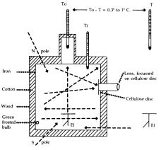 Basic design of orgone accumulator. To = temperature above accumulator; Ti = temperature within accumulator; T = control (temperature of air in room). El = electroscope. Arrows indicate direction of ostensible radiation. The difference averaged about one degree centigrade. Furthermore, this temperature difference was greater on dry days than in humid weather. This experiment, if verified, provides concrete evidence of some new and unknown form of energy generating heat. Reich took his findings directly to the most famous scientist of his day, Dr. Albert Einstein. After some correspondence, Reich visited Einstein in Princeton on January 13, 1941. For nearly five hours that day, Reich discussed his theories with Einstein. He actually demonstrated the visible radiation within the accumulator and explained the temperature difference effect. Einstein, realizing the importance of this work, offered to test the orgone accumulator himself for the temperature difference effect. He did so and arrived at the results predicted by Reich. However, in a letter to Reich, he added his assistant had come up with an alternative explanation -- the temperature difference was due to air convection currents in the cellar of Einstein's home where the experiment took place. Reich retested the phenomena in the open air and with sufficient controls to rule out the possibility of air currents. His results were again positive; however Einstein refused to answer any of his further correspondence. Reich's letters at this time show reasonable arguments and thorough research. Nevertheless, Einstein's rejection led him to turn away from all establishment science. Eventually Reich's work with cancer and his rental of orgone accumulators brought him into conflict with the U.S. Food and Drug Administration. In 1954, Reich was brought to trial but refused to testify, claiming his researches were a matter for scientific, and not legal, jurisdiction. He was sentenced to prison for two years for contempt of court. His books were actually burned by the government and withheld from the market. Nine months after sentencing he died in a federal prison. Careful examination of his writings shows that while they often lacked a scientific precision, they showed a scientific willingness to be led by the facts. For all his faults, Reich was a genius and by no means a cancer quack. His imprisonment and death were a great setback to those who were interested in pursuing his researches. While I am personally aware of several scientists (such as Dr. Bernard Grad at McGill University in Montreal) who claim to have observed the formation of bions under the microscope, there are -- to my knowledge -- no published replications of this crucial finding from independent laboratories. Neither are there any published refutations. In The Cancer Biopathy, Reich does include a letter from Dr. Louis Lapique of the University of Paris who had observed the pulsating bions and was prepared to offer a physical-chemical interpretation of this effect. Reich also states that his findings had been experimentally confirmed in 1937 by Professor Roger DuTeil in Nice. However there is no independent report. The temperature difference experiment has been replicated and the results published in the orthodox Reichian Journal of Orgonomy (Nov. 1971). Reichian research continues only as a fringe study outside of the boundaries of the scientific community. It is unlikely that Reich's orgone theories will ever be taken seriously by most mainstream scientists. Eventually, science may progress to the point where it will be able to integrate the Reichian anomolies (if such there truly be). At the present time, there is only dwindling interest in this area. Some studies have pointed towards the unusual properties of orgone accumulators. For example, at UCLA in the early 1970s, experiments were conducted with an orgone accumulator and an identical-looking control box (built by an undergraduate student, Roger MacDonald) made out of wood. Into each of these boxes was placed a tray containing ten leaves all plucked from the same plants. High-voltage photographs were then taken of the leaves every day for one week by an experimenter who did not know which leaves were in the orgone box and which were in the control. After seven days, eight of the ten experimental leaves were easily photographable and produced bright images, while only three of the control leaves produced pictures. Even after fifteen days, eight of the leaves placed in the orgone box were still producing high-voltage images, while all but two of the leaves in the control box were wilted and dying to the point they were not photographable. This finding, like other research in high-voltage photography, has largely been dismissed by the scientific community because of inadequate experimental controls against possible extraneous influences.. Another series of experiments with orgone accumulators was conducted by Dr. Bernard Grad of McGill University. Using careful experimental controls, Dr. Grad tested the effects of treatment in an orgone accumulator upon cancerous rats. The results of Grad's studies are complex. While the orgone treatment alleviated the symptoms of cancer, it did not really prolong the animal's lifespan. Yet Reichian ideas are a fertile source
of folklore. Orgone blankets are still sought as a cancer treatment. And
there are those who claim that cloudbusters developed by Reich are capable
of controlling weather patterns.
The Russian Concept of Biological Plasma The Russian concept of biological plasma is the latest version of what is essentially Mesmer's old notion of animal magnetism. The term plasma in physics refers to a gaseous collection of positive and negative ion -- sometimes regarded as a fourth state of matter as it is not quite the same as a molecular solid, liquid or gas. The atmospheres of stars, which extend out to interstellar space, are composed of such plasma. The idea that a coherent plasma body might surround and interact with biological organisms was first proposed in 1944 by V. S. Grischenko, a physicist and engineer. Dr. Victor Inyushin, a biophysicist at Kirov State University in Alma-Ata, Kazakhstan, has been the leading theoretical spokesman for the biological plasma body. In contrast to inorganic plasma, biological plasma is said to be a coherent, organized system. The entropic, chaotic motion of particles is reduced to a minimum. Like the visible human body, the bioplasmic body thought to be relatively stable in varying environmental conditions --although it is particularly susceptible to electrical and magnetic perturbations. All kinds of oscillations of bioplasma put together create the biological field of the organism. In the complex organism and its cerebral structures a complicated wave structure -- a biologogram -- is being created, characterized by its great stability as far as the maintenance of the wave characteristics is concerned. The euphonious term, biologogram, appears to be an application of the hologram idea -- a three dimensional image formed by wave interference patterns. The entire image can be reconstructed from any portion of the hologram. This model is very popular among consciousness researchers. Holographic analogies explain why brain functioning is not severely impaired when portions of that organ are removed. The theory of the bioplasmic body has been useful in a communist country where the official dogma is materialist -- and researchers have had to be careful to avoid heretical doctrines. However, the Soviets acknowledge that the biological plasma theory was originally conceived in the absence of any experimental proof. The concept is now used as an umbrella explanation of all sorts of phenomena ranging from hypnosis to astrology, telepathy, psychokinesis, and high-voltage photography. The explanations I have seen in the translated literature seem like rather awkward efforts to fill in the gap in our knowledge left unfilled because of insufficient experimentation. Bioplasma is still, as far as I can tell, an entirely speculative concept. That plasmic phenomena occur in connection with biological organisms is not doubted, but if such fields are organized into coherent and stable patterns a deeper explanation will be required. The research finding that lends support
to the concept of bioplasma is the preliminary report that changes in the
corona discharge of humans and certain animals can be shown to vary with
the emotional state of the organism, or state of consciousness, in a way
independent of other physiological variables that might effect the discharge.
If true, this finding is most unusual since we generally associate a number
of physiological parameters with changes in emotional intensity. None of
the reported experiments have been described in sufficient detail to be
taken at face value.
High-voltage Photography The Soviets have also reported that high-voltage (as developed by Semyon and Valentine Kirlian) photographs are sensitive to changes in the emotions, thoughts and states of consciousness of human subjects. Additional apparent support for this theory came from data gathered by Dr. Thelma Moss and her colleagues at the UCLA Neuropsychiatric Institute. 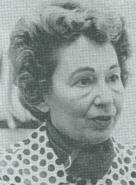 Thelma Moss Studies with subjects in relaxed states produced by meditation, hypnosis, alcohol and drugs generally showed a wider and more brilliant corona discharge on the fingertips. 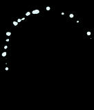 High-voltage photograph showing electrical corona around fingertip of individual before alcohol consumption 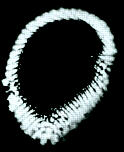 Same fingertip after consuming 9 oz. of bourbon 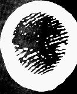 High-voltage photo of fingertip after consuming 15 oz. of bourbon (courtesy Thelma Moss) In states of arousal, tension, or emotional excitement, the researchers observed the appearance of blotches on the color film. Preliminary research seemed to indicate that these photographic indicators were independent of such physiological measurements as galvanic skin response, skin temperature, sweat, or constriction and dilation of the blood vessels. This is a difficult finding to accept, and not thoroughly documented in published reports. Other studies showed a brighter and wider corona in subjects who were in the presence of a close friend or someone of the opposite sex. In 1970, Lynn Schroeder and Sheila Ostrander published in Psychic Discovereis Behind the Iron Curtain a rumor regarding research with the Soviet healer Colonel Alexei Krivorotov: At the moment when he seemed to be causing a sensation of intense heat in a patient, the general overall brightness in Krivorotov's hands decreased and in one small area of his hands a narrow focused channel of intense brilliance developed. It was almost as if the energy pouring from his hands could focus like a laser beam.These reports aroused the interest of western researchers who were determined to investigate this phenomena for themselves. E. Douglas Dean of the Newark College of Engineering in New Jersey, using Czechoslovakian designed equipment, had the opportunity to conduct similar experiments with a psychic healer by the name of Ethel E. De Loach. Dean took several sets of her fingers when she was at rest and when she was thinking of healing. In every case, Dean reported that the flares and emanations were much larger in the pictures when she was thinking of healing. Some of the effects with Mrs. De Loach were very striking: One time Ethel was doing a healing and she knew I was so happy about getting this big orange flare on the photograph. She asked me if I would like a green one. Well I said, "My goodness, yes! You mean you can make a green one to order?" She said, "yes." So we set up the equipment and we got a green flare, a small one.Further research along these lines were conducted by Dr. Thelma Moss and her associates working at the UCLA Center for the Health Sciences. Using high-voltage photography, they have observed an apparent energy transfer from healer to patient. After the healer has finished a treatment, the corona around his fingertip is diminished. On the other hand, an increase in the brilliance and width of the corona of the patient is observed after treatment. Volunteers with no experience in healing were unable to replicate the same effect. In another series of experiments, the UCLA group explored the healing interactions between people and plants. In this study, the "healers" were people who claimed to have a "green thumb," in other words, people who had the ability to make plants flourish under their care. In each experiment there was both an experimental leaf and a control leaf. Both leaves were photographed after being freshly plucked from the same plant. Then each leaf was mutilated and photographed again. Typically this caused the leaf to become dimmer on film. Then the "healer" would hold his hand about an inch above the experimental leaf for as long as he felt was necessary, and the experimental leaf would be photographed again. Most of the twenty "green thumb" volunteers were able to cause an increased brightness in the leaves after treatment. These leaves also remained brighter for many weeks longer than the control leaves. Moss and her coworkers found a number of subjects who claimed to have a "brown thumb" with plants -- plants always seemed to get sick and die under their care. When these subjects attempted the leaf experiment, they were able to cause the corona around the leaf to disappear. One of America's most well-known ostensible psychic healers, Olga Worrall, exhibited apparent conscious control over the energy interactions being photographed. 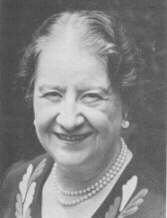 Olga Worrall Oddly enough, the leaf had almost disappeared in the photograph of Mrs. Worrall's first test run. Thelma Moss commented: This was deeply disturbing to us: how could we tell Dr. Worrall, a lady for whom we had the deepest respect, what she had done to the leaf? But, obviously we had to tell her. She looked at the photographs with quiet dignity, and then asked if she might repeat the experiment. She believed she had given the leaf "too much power," and thought a more gentle treatment might have different results. The experiment was, of course, repeated....the second, mutilated leaf...after a more gentle treatment has become brilliant. This was the first time someone had been able, deliberately, to reverse the direction of the bioenergy. Since then, we have had another subject who was able to predict the direction of the energy flow.,A report by skeptical researchers Arleen J. Watkins and William S. bickel at the University of Arizona has identified six different physical factors that affect Kirlian photographs: photographic paper, pressure, voltage discharge, explosure time, moisture in the sample, and photographic developing time. Undoubtedly there are other factors as well. It is not clear that any of the published studies purporting that this method produces interesting results of a psychic or psychological nature, has sufficiently controlled for all of these factors. High-voltage Photography Anecdotes Several related findings have been reported from the UCLA radiation field photography laboratory. One study attempted to observe the fingertips of pairs of individuals, holding their fingers close together, but not touching, as they stared into each other's eyes. Frequently they found, for no apparent explanation, that one of the fingertips in each pair would practically disappear. One of the subjects was a professional hypnotist, and it was repeatedly discovered that he could blank out the fingertips of any one of a number of partners. In a rather striking experiment, one subject was asked to visualize sticking a needle into her partner, who was known to be afraid of needles. The high-voltage photograph of their fingertips shows a sharp red line darting out of the aggressor's finger toward her imagined victim whose emanations appear to be retreating. On the other hand, the photographed corona of two individuals taken while they have meditated together, according to Moss, has typically has shown a merging and uniting of the two individual coronas. Sometimes when two persons were able to
generate feelings of hostility towards each other, the corona between their
fingers would abruptly cut off, leaving a gap so sharp and clear it became
known as the "haircut effect." In some instances a bright bar, like a barrier,
would appear between the two photographed fingerpads. Further studies with
family groups engaged in family therapy were conducted. Group photographs
were taken with the fingerpads of each member of the family. Typically
one member of the group, generally the son, would not photograph at all.
Other photographs in this study suggested to the researchers that high-voltage
photography could provide insights into the emotional reactions between
people.,
The Phantom Leaf Effect The most startling finding of high-voltage photography research was called the "phantom leaf" effect. Ostrander and Schroeder in Psychic Discoveries Behind the Iron Curtain first reported that the Soviets were often able, after removing a portion of a plant leaf, to photograph a corona pattern around the leaf as if the whole leaf were still there. This suggested to researchers that radiation of energy around the leaf formed a holographic pattern acting as an organizing force field for physical matter. The Soviets dubbed this hypothesized organizing field the biological plasma body. For several years American experimenters tried unsuccessfully to duplicate this effect. While the relevant procedural variables were still unknown, scientists such as William Tiller maintained that this single observation was "of such vast importance to both physics and medical science that no stone should be left unturned in seeking the answer!" In 1973, Kendall Johnson, after bore than 500 trials, succeeded in producing a "phantom leaf" with clear internal details. Immediately researchers suggested the results were due to an artifact -- possibly from an electrostatic charge left on electrode's surface before the leaf was cut. John Hubacher, a graduate student working in Thelma Moss' laboratory then produced about a dozen phantom leaves that show an internal structure -- presumably belonging to the cut-off section of the leaf. Experimenting in the spring months (which was suggested as a relevant variable) Hubacher came to expect clear phantom images in about 5% of his attempts and partial images in another 20%. He was unable to ascertain the variables that resulted in a perfect image. He claims that he was careful to cut the leaf before it was placed on the electrode in order to avoid the possibility of an electrostatic artifact. In fact, he went further and attempted to deliberately create a pseudo-phantom effect by pressing the leaf against the film emulsion before cutting a section off. The results of these efforts did not create any good looking phantoms. Perhaps the most encouraging efforts in this direction were the motion pictures taken of the fading phantom leaf through a special transparent electrode. The speed of the camera was slowed to about six frames a second. This work was in Dr. Moss' laboratory with the help of Clark Dugger, a graduate student in UCLA's noted cinema department. Both black and white and color high-voltage photographs showed the "phantom" sparkling brilliantly and pulsing for several seconds before it disappeared. In these experiments, the leaf was reportedly always cut before it was placed on the electrode; and the phantom leaves were obtained only during spring months., Working in Moss' laboratory, and also at the Washington Research Center in San Francisco, I was able to reproduce partial phantom effects with little difficulty. However, I am unable to make any claims for the phenomena as it would have taken many months, perhaps years, of intensive research to control all of the possible sources of artifact. The leaf being photographed, for instance, must be grounded with an electrode; and the placement of this electrode, a possible source of additional corona discharge, seems crucial. Sometimes unaccountable images appeared on high-voltage photographs of normal leaves, fingertips, and also inanimate objects. William Joines and his colleagues of the electrical engineering department at Duke University have been able to produce a "phantom leaf" effect, for example as a result of film buckling. 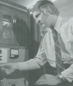 William Joines (courtesy Foundation for Research on the Nature of Man) The phantom leaf effect, if true, carries
such significance for science it is essential the experiments be replicated
under tightly controlled conditions that can provide a secure foundation
for theoretical models. While only further well-controlled studies can
resolve these tenuous problems, the scientific community has turned away
from Kirlian high-voltage photography as a productive research tool.
Kurt Lewin's Field Theory In order to explain these uncanny photographic
events, some researchers have drawn upon the efforts of psychologist Kurt
Lewin (1890-1947) to apply the concepts of physical fields to the study
of human personality. One of the unique characteristics of Lewin's theory
was using of diagrammatic representations of internal and external personality
interactions. The following diagram is one Lewin used:
The individual is described graphically by the quality of psychological environment (or aura) around him. Person b, for example, is one with a thicker boundary. The outer world has little influence on the life-space and vice-versa. The life-space of person a is more open and expansive. Lewin has often been criticized for the
unjustified application of physical concepts and terminology to the realm
of personality where they did not belong. It was claimed that his diagrams
were an attempt to appear scientific without using the requisite controls
and measurements of science. Furthermore, it was difficult for these critics
to see what these diagrams had to do with the "real world." Proponents
of Kirlian high-voltage photography suggest Kirlian photographs can be
read almost as if they were Lewin diagrams of personality fields. This
claim goes far beyond what Lewin himself ever actually suggested. However,
in the analytical psychology of Carl Gustav Jung, it has been proposed
many times by Jung himself that the archetypal world -- although it exists
within the mind -- should be thought of as objective reality. It resembles
Plato's realm where ideas themselves exist as visible thought-forms.
References . Joseph Campbell, Understanding Mythology (#S075), in The Roots of Consciousness (#Q154), videotapes available from Thinking Allowed Productions, Berkeley, CA. . Annie Besant & C. W. Leadbeater, Thought Forms. Wheaton, Ill.: Theosophical Publishing House, 1971, 8-17. Originally published in 1901. Besant, a former mistress of George Bernard Shaw, became head of the international theosophical movement after the death of Madame Blavatsky. . Yogi Ramacharaka, Yogi Philosophy and Oriental Occultism. Chicago: The Yogi Publication Society, 1931, pp. 73-90. Originally published in 1903. . Eileen Garrett, Awareness. New York: Helix Press, 1943, pp. 99-100. An eloquent, lyrical testimony by the founder of the Parapsychology Foundation. . Yogi Ramacharaka, Yogi Philosophy, pp. 64-66. . Ray Stanford, "On Viewing the Aura," KPFA-FM and the lnterdisciplinary Parapsychology Program of U. C., Berkeley, Parapsychology Symposium, February 1974. . Charles T. Tart, "Concerning the Scientific Study of the Human Aura," Journal of the Society for Psychical Research, 46(751), March 1972. . A. R. G. Owen, "Generation of an 'Aura': A New Parapsychological Phenomenon," New Horizons, I(1), Summer 1972, 11-13. . E. N. Santini, Photographie des Effluves Humains. Paris, 1896. . Max Heindel, The Rosicrucian Cosmo-Conception. Oceanside, CA: The Rosicrucian Fellowship, 1969, pp. 59-64. Originally published in 1909. . A. R. G. Owen & G. A. V. Morgan, "The 'Rim Aura': An Optical Illusion -- A Genuine but Non-psychic Perception," New Horizons I(3), January 1974, 19-31. . A. R. G. Owen, "Generation of an 'Aura'," 14-23. . C. W. Leadbeater, The Chakras. Wheaton, IL: Theosophical Publishing House, 1972, p. l. Originally Published in India in 1927, this book contains a perplexing combination of allegedly first-hand clairvoyant reports and Theosophical dogma. There are a number of illustrations. . The etheric body is essentially a pseudoscientific term which became popular at a time when many scientists still supposed that an unknown substance called the ether permeated the entire universe and mediated the transmission of electromagnetic waves. Einstein's theory of relativity has subsequently superceded this view in science; however occultists who simply the teachings of earlier generations still sometimes retain this terminology. . Ibid., 45. . Ibid., 19-20. According to Leadbeater, Theosophica Practica was originally issued in 1696. The illustrations to the book were apparently added about 1720. A French translation, used by Leadbeater, was published in 1897 in the Bibliotheque Rosicrucienne (No. 4) by the Bibliotheque Charcornac, Paris. . Shafica Karagula, Breakthrough to Creativity. Santa Monica, CA: De Vorss, 1967. . Shafica Karagula, "Higher Sense Perception and New Dimensions of Creativity," American Psychiatric Association Convention, May 1974. . William A. Tiller, "Radionics, Radiesthesia and Physics," in The Varieties of Healing Experience, Academy of Parapsychology and Medicine, October 1971, pp. 72-78. . Lee Sannella, Kundalini: Psychosis or Transcendence. San Francisco: H. S. Dakin, 1976. . Motoyama, op. cit. . Rammurti S. Mishra, Yoga Sutras. New York: Doubleday, 1973, pp. 295-296. . Lama Anagarika Govinda, Foundations of Tibetan Mysticism. New York: Samuel Weiser, 1969, p. 135. An exposition of the esoteric teachings underlying the mantra, OM MANI PADME HUM. . John F. Thie & Mary Marks, Touch for Health. Santa Monica, Ca.: DeVorss, 1973. . Jacques de Langre, The First Book of Do-In. Hollywood: Happiness Press, 1971. . J. F. Chaves & T. X. Barber, "Acupuncture Analgesia: A Six-Factor Theory," Psychoenergetic Systems, 1, 1974, 11-21. . Joan Steen Wilentz, The Senses of Man. New York: Thomas Crowell, 1968, pp. 89-109. . Felix Mann, "The Probable Neurophysiological Mechanism of Acupuncture," Transcript of the Acupuncture Symposium. Los Altos, CA: Academy of Parapsychology and Medicine, 1972, pp. 23-31. . Ibid. . Wilhelm Reich, The Discovery of The Orgone, Vol. II: The Cancer Biopathy. New York: Farrar, Straus and Giroux, 1973, p. 1521. This book, the major volume in which Reich describes his orgone research, contains over 70 microphotographs. . Today, Reich's claims are considered, by most, comparable to the mysterious "N-rays" that French physicists once thought they had discovered. See Section III for a further discussion of this cognitive error. . Ibid., pp. 108-142. . Wilhelm Reich, History of the Discovery of Life Energy--The Einstein Affair. Rangeley, Maine: Orgone Institute Press, 1953. A documentation of the original correspondence between Reich and Einstein. . W. Edward Mann, Orgone, Reich and Eros. New York: Simon and Schuster, 1973. Mann, a retired professor of sociology from York University in Toronto, Ontario, is one of Canada's foremost sociologists. His book is a major document tracing the scientific impact of Reich's work within a sociological framework which includes other research into life energies. . Wilhelm Reich, The Cancer Biopathy, pp. 23-25. . Thelma Moss, et al., "Bioenergetics and Radiation Photography," First International Conference on Psychotronics, Prague, 1973. . Bernard Grad, "Orgone Treatment of Cancerous Rats," Esalen Institute Symposium on Reich and Orgone, San Francisco, August 1974. . V. M. Inyushin, "Biological Plasma of Human and Animal Organisms," Symposium of Psychotronics, Prague, September 1970. Published by the Paraphysical Laboratory, Downton, Wiltshire, England. . Ibid. . Thelma Moss has retired from UCLA, and research in Kirlian photography no longer continues there. The general consensus among researchers is that there were too many uncontrolled extraneous variables in virtually all of the high voltage photography studies to enable any conclusions to be drawn of a psychological nature. . Thelma Moss, John Hubacher & Francis Saba, "Visual Evidence of Bioenergetic Interactions Between People?" American Psychological Association Convention, New Orleans, May 1974. . Sheila Ostrander & Lynn Schroeder, Psychic Discoveries Behind the Iron Curtain. New York: Prentice Hall, 1970, p. 223. . E. Douglas Dean, "High-voltage Radiation Photography of a Healer's Fingers," in S. Krippner & D. Rubin (eds.), The Kirlian Aura. New York: Doubleday, 1974. . Jeffrey Mishlove and Douglas Dean, "From Parapsychology to Paraphysics," Mind's Ear radio program, broadcast on KPFA-FM in Berkeley, California, July 5, 1973. . Thelma Moss, Kendall Johnson, Jack Grey, John Hubacher, Roger MacDonald and Francis Saba, "Bioenergetics and Radiation Photography," First International Conference on Psychotronics, Prague, 1973. . Ibid. . Ibid. . Ibid. . Many individuals used the title "Dr." when referring to Olga Worrall as a token of respect, although she lacked formal academic or medical credentials. . Arleen J. Watkins & William S. Bickel, "The Kirlian Technique: Controlling the Wild Cards," Skeptical Inquirer, 13(2), Winter 1989, pp. 172-184. . Thelma Moss, John Hubacher & Francis Saba, "Visual Evidence of Bioenergetic Interactions Between People?" . Thelma Moss, John Hubacher, Francis Saba & Kendall Johnson, "Kirlian Photography: An Electrical Artifact?" American Psychological Association, August 1974. . Thelma Moss, John Hubacher & Francis Saba, "Anomalies in Kirlian Photography: Interactions Between PeopIe Reveal Curious 'Disappearances' and 'Merging' Phenomena," Second International Psychotronics Conference, Monaco, 1975. . William A. Tiller, "Energy Fields and the Human Body: Part I," A.R.E. Medical Symposium on Mind Body Relationships in the Disease Process, Phoenix, Arizona, January 1972. . William A. Tiller, "Some Energy Field Observations of Man and Nature," The Kirlian Aura, p. 122. . John Hubacher and Thelma Moss, The "Phantom Leaf Effect" As Revealed Through Kirlian Photography. UCLA Center for the Health Sciences, 1974. . Thelma Moss, Ph.D., The Probability of the Impossible. Los Angeles: J. P. Tarcher, 1974. pp. 54-58. This lively book documents the many research activities of Dr. Moss, a former Broadway actress. It is valuable for her firsthand accounts of her travels in the Soviet Union and Czechoslovakia as well as the inside story of her own laboratory activities. . Clark Dugger, John Hubacher, Thelma Moss & Francis Saba, "'The Phantom Leaf,' Acupuncture, and Altered States of Consciousness," Second International Psychotronics Conference, Monaco, 1975. . Larry Burton, William Joines & Brad Stevens, "Kirlian Photography and its Relevance to Parapsychological Research," Parapsychological Association Convention, New York, 1974. Also presented before the Symposium of the Institute of Electronic and Electrical Engineers, November 1974. . C. S. Hall & G. Lindzey, Theories of Personality. New York: John Wiley and Sons, 1957. pp. 296-335. This book provides summaries of many psychological theories. Of particular interest is the classification of each theory according to its emphasis along each of eighteen different parameters (p. 548). . Stanley Krippner & Sally Ann Drucker,
"Field Theory and Kirlian Photography: An Old Map for a New Territory,"
in The Kirlian Aura.
|